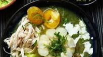

Ajiaco

This classic Colombian soup is served with cream, capers, avocado, mote
(boiled corn)
and shredded chicken breast, all mixed in just before
eating
Ingredients
skinless chicken breasts
2 cobs choclo corn (a variety of large-kernel yellow corn)
or regular corn cobs
4 garlic cloves, sliced
½ white onion, diced
1 yellow pepper, diced
4 medium potatoes (red or white), peeled and diced
2 spring onions, chopped
6 coriander sprigs, chopped, plus extra to serve
12 papas criollas (small yellow potatoes), cut in half
8 tbsp guascas
Steps
- Put the chicken, corn cobs, garlic, onion, pepper, potatoes, spring
onions and coriander in a pan with 2 litres water and bring to the boil,
season well, then simmer for approximately 45 mins over a medium
heat.
- Remove the corn and the chicken and transfer them to a plate.
Blend the remaining ingredients in the pan with a hand blender until
you get a creamy consistency.
- Add the papas criollas and the guascas to the pan and cook over a
medium heat for around 10-12 mins, or until the papas criollas start to
get soft but do not disintegrate.
- Meanwhile, shred the chicken breasts finely with your hands, and cut
the corn cobs into thick slices. Put into separate small bowls.
- Put the cream, capers, avocado and extra chopped coriander in small
bowls as well, so that everyone can help themselves to what they want.
Pour the soup into four soup bowls and serve alongside the other
ingredients. Don’t forget napkins for eating the slices of corn.
Back to home page